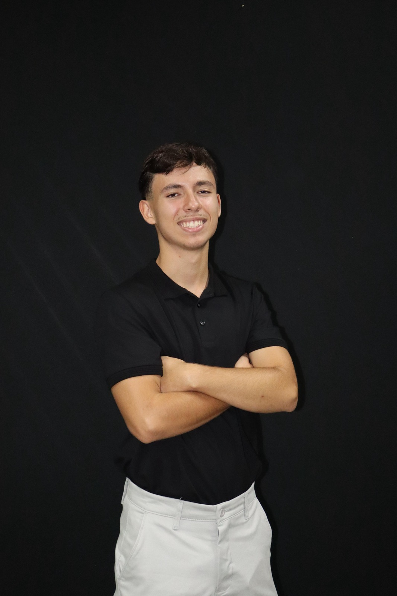
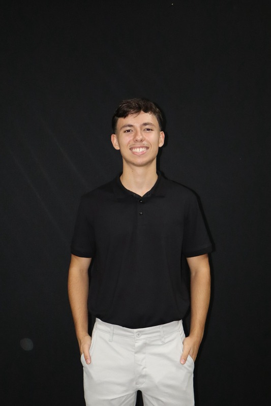
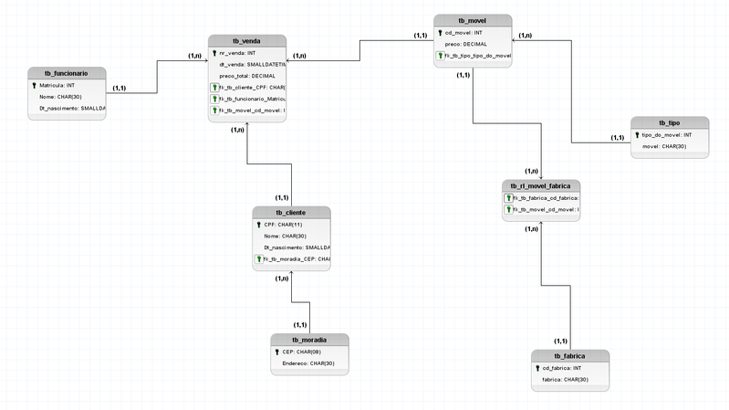

Lucas Agra
PORTFOLIO HUB
ESTUDANTE DE CIÊNCIA DA
COMPUTAÇÃO
EMAIL ME
Lucas Agra de Oliveira Moraes
Nascido em Brasília, sempre fui curioso e interessado em entender como as coisas funcionam — e isso acabou me levando naturalmente para a área de tecnologia. Hoje, curso Ciência da Computação no Centro Universitário de Brasília (CEUB), onde venho desenvolvendo meu interesse por programação e criação de jogos, áreas que me motivam justamente pela mistura entre lógica e criatividade.
Uma parte importante da minha trajetória também vem do esporte. Joguei futebol de base durante boa parte da minha juventude, e essa experiência teve um papel grande na formação de quem eu sou hoje. Além de valores como disciplina, comprometimento e trabalho em equipe, foi no esporte que comecei a me interessar mais pela análise de desempenho e pelo uso de dados para melhorar resultados. Hoje, tenho um grande interesse em explorar cada vez mais a conexão entre tecnologia e esporte, buscando formas de aplicar programação e análise de dados para gerar impacto real dentro desse contexto.
Gosto de desafios, de aprender coisas novas e de buscar soluções de forma prática. Tenho facilidade em me adaptar, trabalhar em grupo e correr atrás do que precisa ser feito, sempre com responsabilidade e foco.
Atualmente, estou em busca de oportunidades que me permitam crescer na área de tecnologia, ganhar experiência na prática e continuar evoluindo, tanto profissionalmente quanto pessoalmente.

Estudante de ciêcia da computação
PERFIL PESSOAL
Currículo
Centro Universitário de Brasília (CEUB), Brasília, DF - 2025 - Atual
Graduação em Ciência da Computação - Cursando o 1° semestre - Matutino
Previsão de formatura: Dezembro de 2029
Ensino Médio Completo: IESE- Instituto Educacional Santo Elias, Sobradinho, DF - 2023 - 2025
Programação Básica | Instituto Educacional Santo Elias - 40 horas | Concluído em 2023
Inglês | PL Idiomas | Cursando - Previsão de formatura: Dezembro de 2026
Campeão da copa de futsal de base - DF | 2015, 2016, 2017
Campeão da copa HC de futebol de base | 2019
Campeão da taça bronze - BSB cup | 2021
Três vezes medalhista de bronze na prova canguru de matemática | 2019, 2020, 2023

Projetos Acadêmicos e Profissionais
Modelagem de Banco de Dados – Sistema de Loja de Móveis
Desenvolvimento de um Modelo Entidade-Relacionamento (MER) para um sistema de gerenciamento de loja de móveis, contemplando entidades como clientes, funcionários, vendas, produtos e fabricantes.
O projeto envolveu a definição de relacionamentos, cardinalidades e organização lógica dos dados, simulando um cenário real de controle de vendas e cadastro de informações. Essa experiência fortaleceu minha compreensão sobre estruturação de dados e modelagem de sistemas.
Programação em C – Cálculo de Lucro/Prejuízo
Desenvolvimento de um programa em linguagem C capaz de calcular o lucro ou prejuízo de uma venda com base no valor de compra e venda. O projeto utiliza estruturas condicionais para análise de resultados, reforçando conceitos fundamentais de lógica de programação e tomada de decisão.
Programação em C – Resolução de Equação do 2º Grau
Implementação de um programa em C para cálculo das raízes de uma equação do segundo grau utilizando o discriminante (delta). O projeto envolve operações matemáticas e condicionais para determinar diferentes cenários (raízes reais, iguais ou inexistentes), consolidando o uso de bibliotecas matemáticas e lógica computacional.
Habilidades e Competências
Trabalho em equipe Responsabilidade com prazos Facilidade de aprendizado Resolução de problemas Proatividade Experiência no futebol de base (G10, Abarka, Sobradinho EC, Cruzeiro EC)
Recomendações e Testemunhos
Família
Futebol
Amizades
Treinadores
Colegas de equipe
Costumam destacar meu comprometimento com tudo que me proponho a fazer e minha vontade constante de evoluir, sempre buscando fazer as coisas da melhor forma possível.
Me veem como alguém tranquilo de conviver, parceiro e sempre disposto a ajudar. Também ressaltam minha curiosidade e o fato de eu estar sempre tentando aprender algo novo.
Destacam minha leitura de jogo, capacidade tática e evolução técnica ao longo do tempo. Sempre fui alguém atento aos detalhes dentro de campo, buscando entender o jogo além do básico e melhorar meu desempenho de forma consistente.
Valorizam minha postura dentro do grupo, comunicação e espírito coletivo, sempre focado em contribuir para o desempenho do time como um todo.